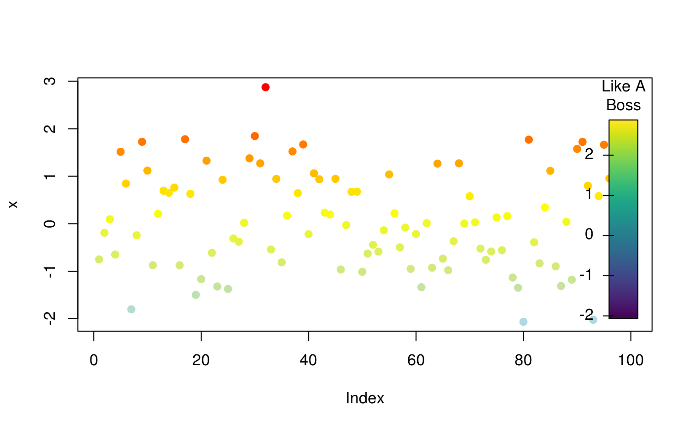

Draw a color key in the current device
drawColorKey(x, tick.marks = pretty_within(x), labels = tick.marks, main = NULL, key.pos = c(0.925, 0.975, 0.05, 0.95), pos = 2, nlevels = length(tick.marks), color.palette = (grDevices::colorRampPalette(c("steelblue", "gray", "tomato")))(nlevels), tick.width = c(0.01, 0.0075), add.box = TRUE, na.col = NULL, na.height = 0.1, na.lab = "n/a", ...)
| x | A numeric vector with the data (it is used to extract the range). |
|---|---|
| tick.marks | A numeric vector indicating the levels to be included in the axis. |
| labels | Character vector. When provided, specifies using different
labels for the tick marks than those provided by |
| main | Character scalar. Title of the key. |
| key.pos | A numeric vector of length 4 with relative coordinates of the
key (as % of the plotting area, see |
| pos | Integer scalar. Position of the axis as in |
| nlevels | Integer scalar. Number of levels (colors) to include in the color key. |
| color.palette | Color palette of |
| tick.width | Numeric vector of length 2 indicating the length of the inner and outer tick marks as percentage of the axis. |
| add.box | Logical scalar. When |
| na.col | Character scalar. If specified, adds an aditional box indicating the NA color. |
| na.height | Numeric scalar. Relative height of the NA box. Only use if
|
| na.lab | Character scalar. Label of the |
| ... | Further arguments to be passed to |
Invisible NULL.
Other visualizations: dgr,
diffusionMap,
grid_distribution,
hazard_rate, plot_adopters,
plot_diffnet2, plot_diffnet,
plot_infectsuscep,
plot_threshold,
rescale_vertex_igraph
set.seed(166) x <- rnorm(100) col <- colorRamp(c("lightblue", "yellow", "red"))((x - min(x))/(max(x) - min(x))) col <- rgb(col, maxColorValue = 255) plot(x, col=col, pch=19)drawColorKey(x, nlevels = 100, border="transparent", main="Key\nLike A\nBoss")